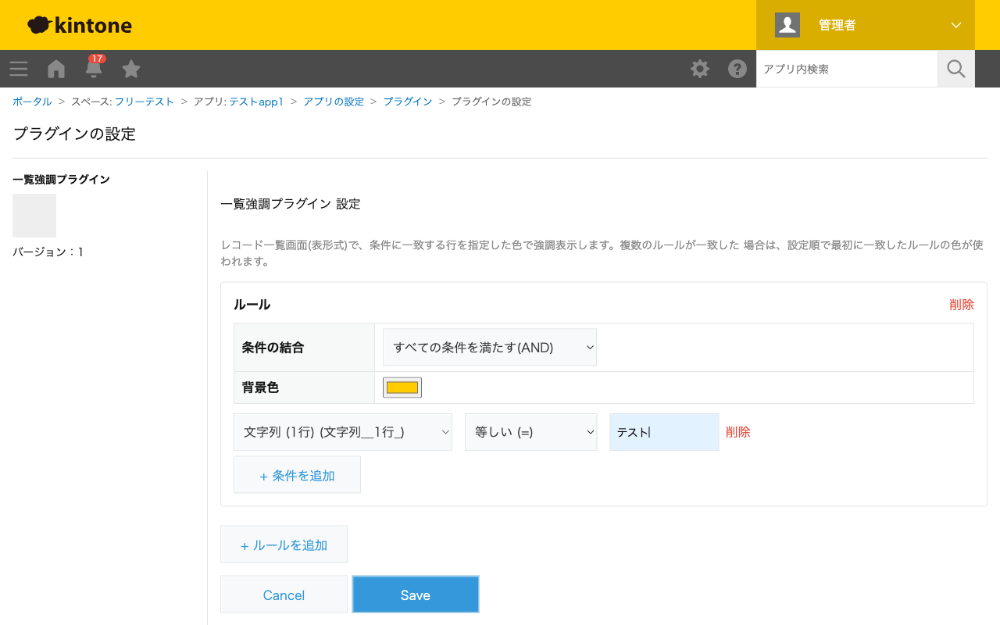

GovAppsプラグイン 安全性を確認できる無料kintoneプラグイン集
レコード一覧画面(表形式)で、指定した条件に一致する行を指定した色で強調表示します。強調ルールを 複数設定でき、ルールごとに条件(AND/OR結合の複数条件)と背景色を選べます。1行が複数のルールに 一致した場合は、設定順で最初に一致したルールの色が使われます。
「対応期限が今日以前かつステータスが未対応」のような条件を設定しておくと、一覧画面を開いた瞬間に赤色などで目立つ行として確認できます。件数の多い一覧から緊急対応が必要なレコードを探す手間を減らせます。
ステータスの値ごとに異なる背景色のルールを複数設定すれば、一覧全体を見渡すだけで「承認待ち」「差し戻し」「完了」などの内訳をおおまかに把握できます。複数のルールに一致する行は、設定した順番のうち最初に一致した色が優先されます。
強調はレコード一覧画面(表形式)でのみ有効です。カレンダー形式・カスタマイズビューでは動作しません。関連レコード・グループ・罫線・ラベル・スペース・テーブル内フィールド、詳細表示/編集/削除ボタンの列には背景色を適用しません。
kintoneセキュアコーディングガイドラインに沿って実装時にチェックしています。特に重要な点は次のとおりです。
kintone.app.setRecordListStyle())に委ねています。外部サーバーへの通信・外部ライブラリは一切使用していません。<input type="color">)で選択した#rrggbb形式の文字列のみを使用し、保存前に形式(/^#[0-9a-fA-F]{6}$/)を検証します。任意の文字列をCSSプロパティ値としてそのまま埋め込むことはなく、CSSインジェクションのリスクは実質的にありません。textContentまたは<template>要素のcloneNodeで行っており、innerHTMLへの外部由来文字列の埋め込みはありません。詳細な確認項目・確認日は下記GitHubのチェックリストに全項目を掲載しています。

このプラグインはREST APIを一切実行しません。フィールド一覧の取得は
kintone.app.getFormFields()、行の強調表示はkintone.app.setRecordListStyle()と
いったJavaScript APIのみで完結し、API実行数制限に影響することはありません。